Next: Completion of the installation Up: Server installation Previous: Preperations Contents
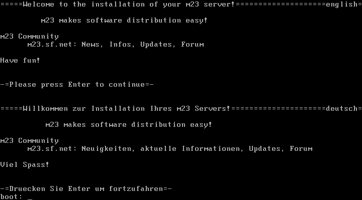
This is the boot screen of the m23 server installation CD. Press Enter to boot the Linux operating system from the CD. Afterwards, the installation programm will be started.
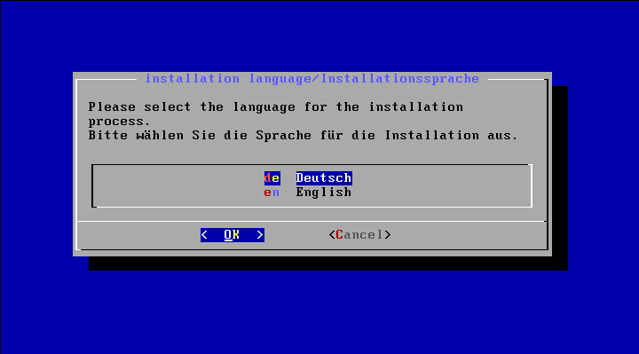
You have to choose if you want the messages of the installation program in German or in English. We assume you select ''English''.
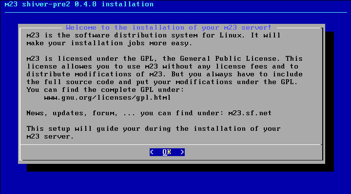
Just saying ''Hi!'' ;)
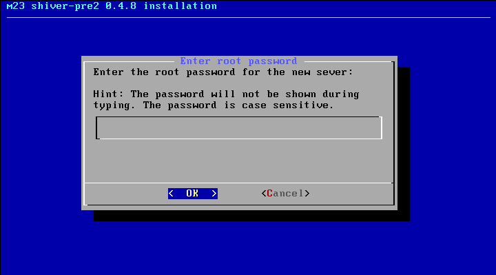
Enter the root password, please. The root account is for the system administrator who has unlimited access to the m23 server. You should select a password that cannot be guessed easily. It should have at least 10 characters. To use lower and upper case characters plus digits is always a good idea.
As the password will not be shown during typing, you have to reenter it in the following dialog.
The hostname of the server. What a wonderful statement ;)
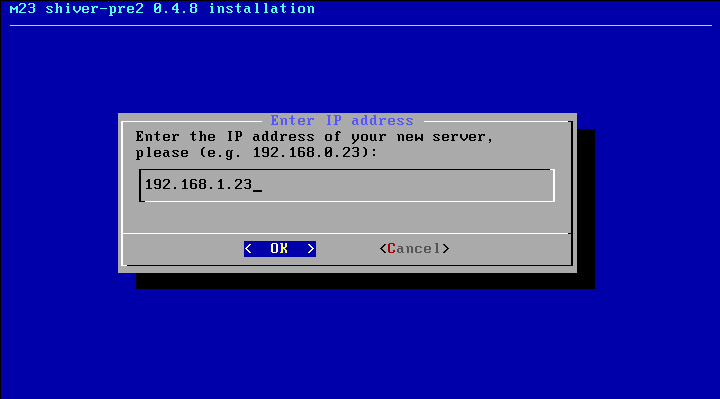
The IP address that will be used to access the server. The address should be reachable from the clients without the need of a router.
The netmask masks the parts of the IP that belong to the network or to the clients.
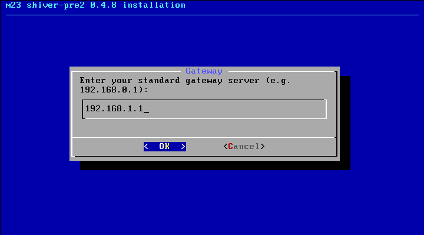
The gateway IP is used for requests to IPs that are not connected directly to your network. This is used especially to access the internet.
The DNS server resolves host names and URLs to IP addresses. E.g. ftp.debian.org will be translated to 128.101.80.131. If you don't know a DNS server, you can use the IP 134.245.10.36. This is the DNS server of the university of Kiel.
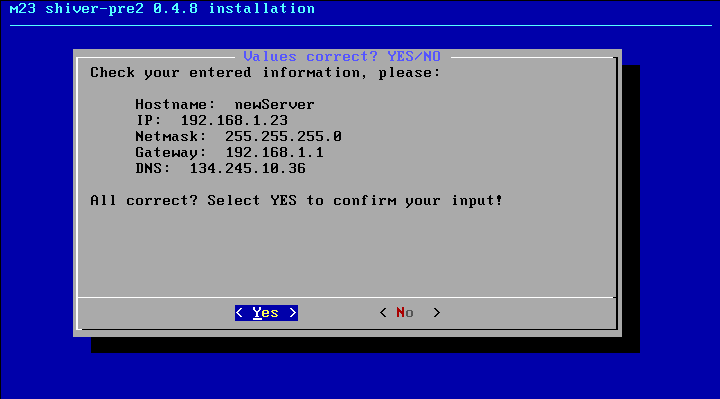
This is your last chance to check if you have entered all values correctly. Select ''Yes'' if you want to proceed with the installation or ''No'' to correct your settings.
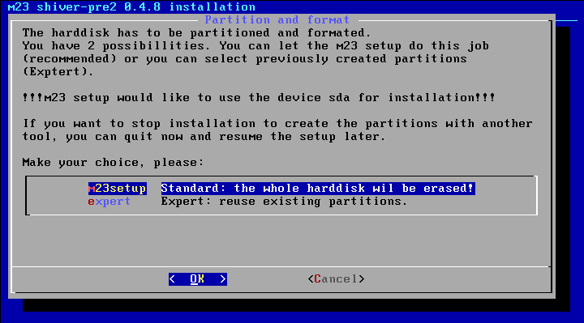
You can choose if you want to use the entire harddisk for m23. This will split your harddisk into two partitions: The first for the Debian operating system and the server software and the second as swap space. If there are more harddisks, only the first one will be used. But you have the possibility to partition your harddisk yourself!
Information about partitioning
The entire harddisk of your server will be deleted or you have to partition the harddisk with a programm like parted, fdisk, cfdisk etc. If you would like to do the partitioning by yourself, you have to create two partitions on the first harddisk (hda or sda):

Last warning ;)
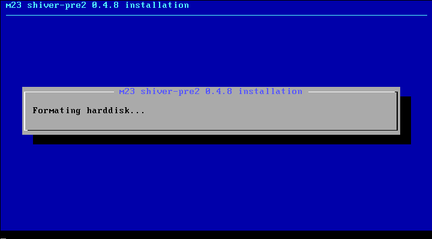
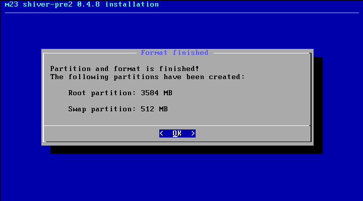
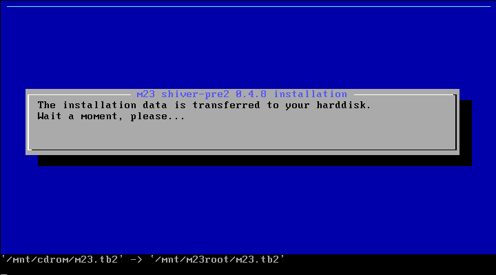
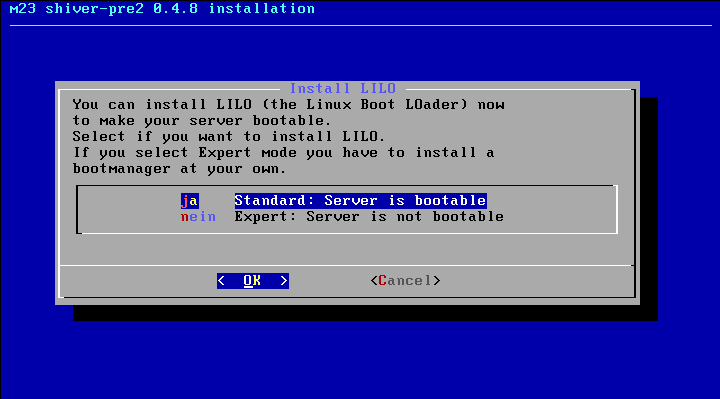
You can select if you want the bootmanager LILO (LInux LOader) to be installed in the MBR (MasterBootRecord) of the first harddisk. If you do not want it, you have to install a bootmanager on your own. Otherwise, the server will not boot.
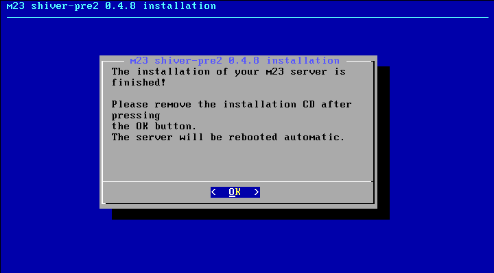
The installation is completed ;)
root 2015-09-06